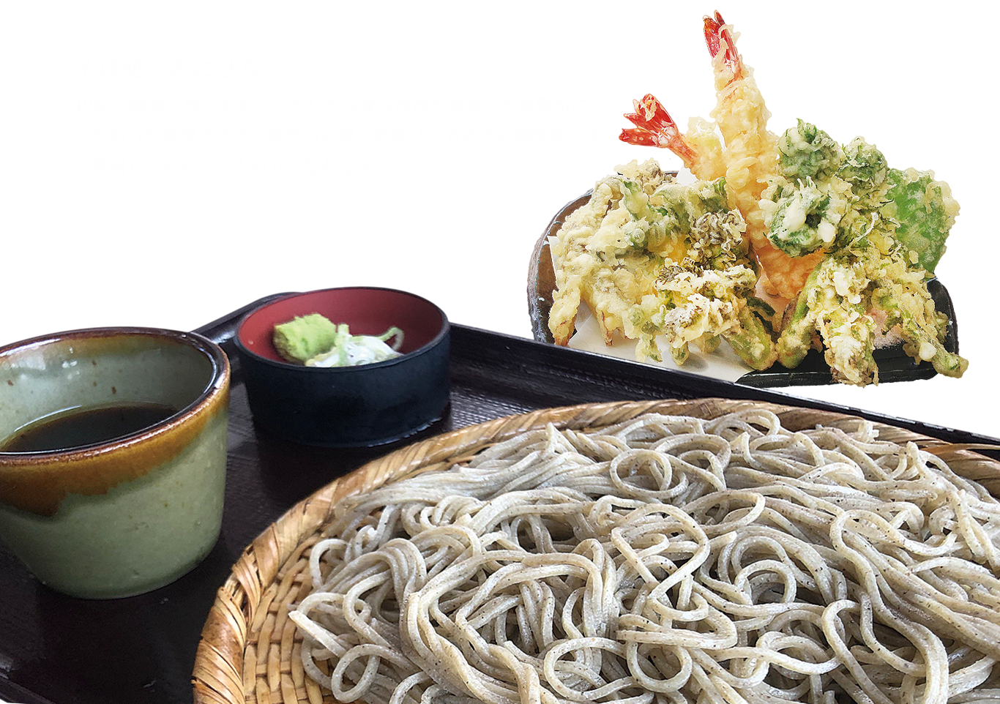
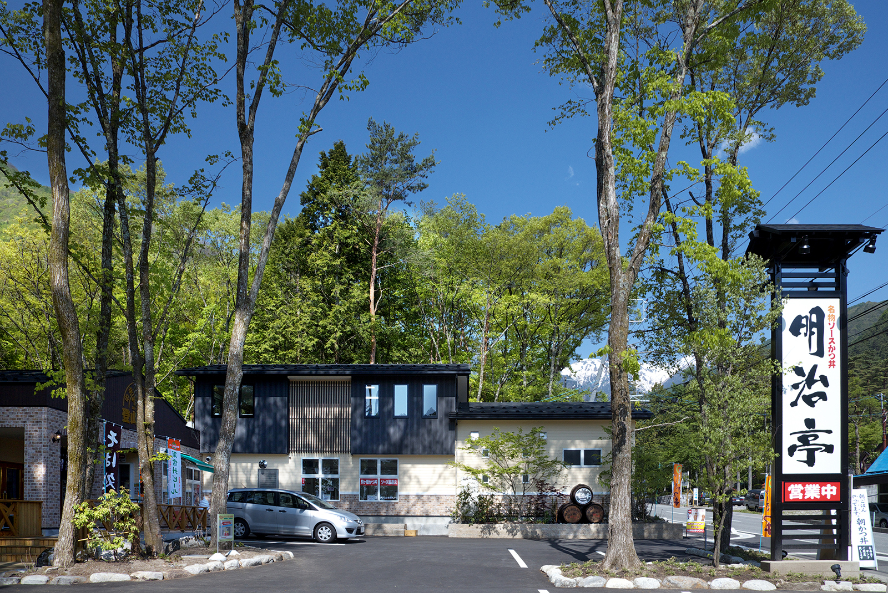

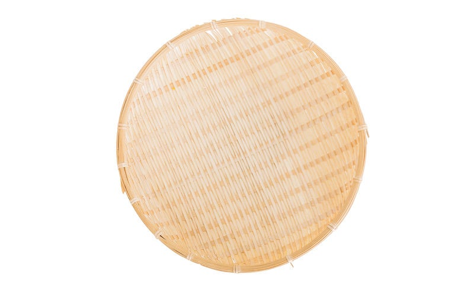
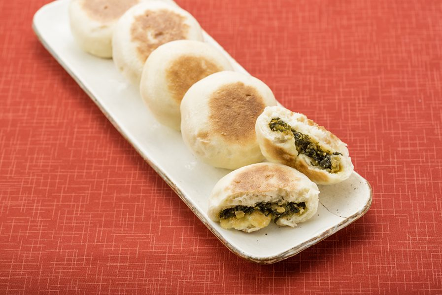
清風苑ゆら起点 ／ 子連れ家族向け ／ 2026年3月28-29日




108店から5ロール専門家（グルメライター/子育てママ/南信州ガイド/ドライブ旅行家/フードフォトグラファー）が厳選
名物: おにひらそば（3人前の豪快盛り ¥1,750）を家族でシェアが最高。自家製粉・石臼粗挽き。年中無休。阿智村で最も有名なそば店。五平餅も◎。
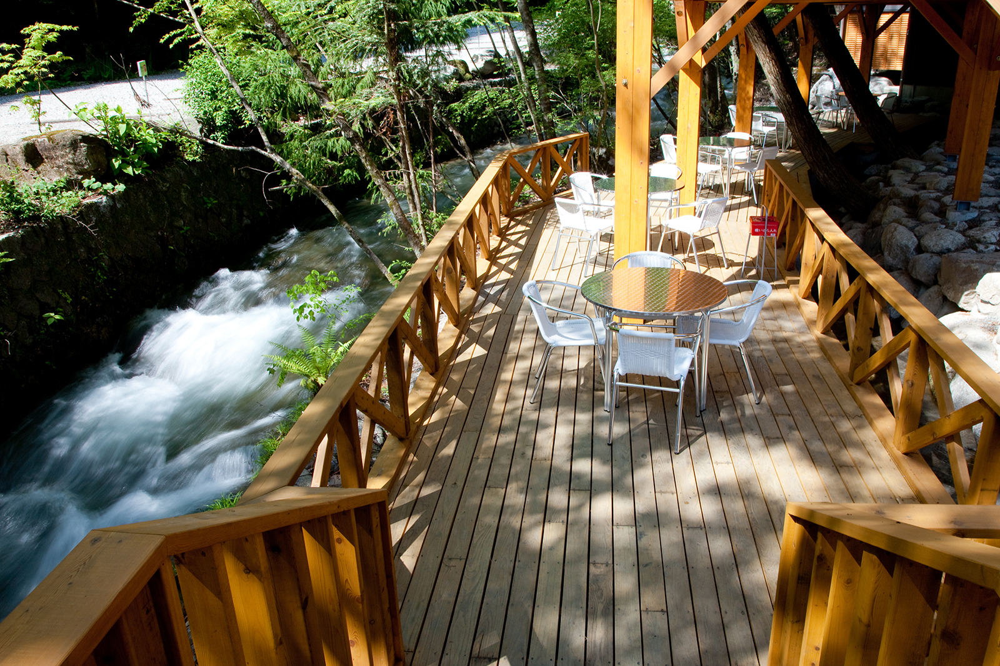
名物: 駒ヶ根ソースかつ丼の代名詞。自家製ソースが絶品。1杯で150gの肉！ 土日は11時前着推奨（行列あり）。往路のランチに最適。
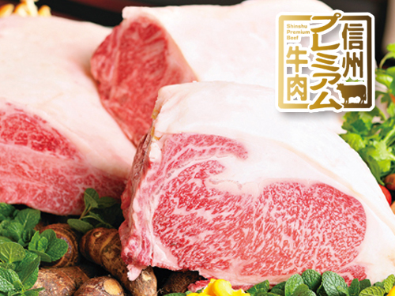
名物: 鹿肉ボロネーゼ¥1,300、ピザ¥1,350。おしゃれ空間で地元ジビエ。子供はピザで大喜び。土日は11:00〜21:00通し営業。
子連れ最強: キッズルーム・授乳室完備。店長が保育士資格保有。栄養士監修の離乳食あり。小上がり＆ベッド席。ランチプレートがボリューム満点。
名物: 飯田は焼肉店の数が人口比日本一！ 牛カルビ480円〜と安い。全席半個室・掘りごたつで子連れ最適。200席の大型店で待ち少なし。

おすすめ: 音吉の自然薯とろろ定食¥1,650が絶品。食後は五平餅5店舗を食べ比べ。好日珈琲のそば粉ガレット、澤田屋の栗きんとんも。
名物: 自家製生パスタ＆石窯ピッツァ。ランチは前菜バー＋ドリンクバー＋メイン＋ドルチェのフルセット¥1,400〜。子供メニューあり。年中無休。
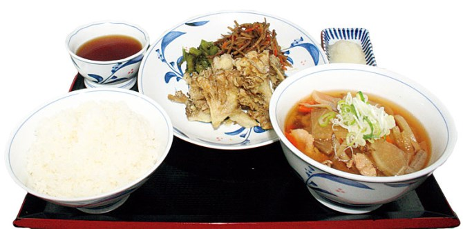
名物: さくら丼（馬刺し）、信州サーモン丼、諏訪味噌天丼。全天候型展望テラスから諏訪湖一望。子供が走り回れる。往路でも復路でも使える万能SA。
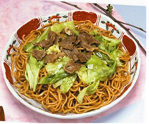
名物: 昭和30年創業の元祖ローメン（マトン＋キャベツ＋太麺のスープ麺）。伊那でしか食べられないご当地B級グルメ。月曜定休。往路の冒険ランチに。
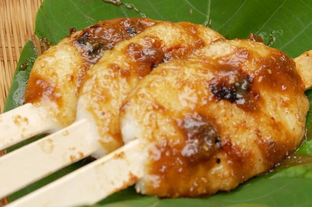
名物: 明治5年創業、5代目が守るくるみ味噌だれの五平餅。1本130円で食べ歩き。南信州五平餅の最高峰。水曜定休。
名物: サクサクのロースとんかつ。キャベツ食べ放題。年中無休で11:00-22:00。広い店内で子連れも安心。
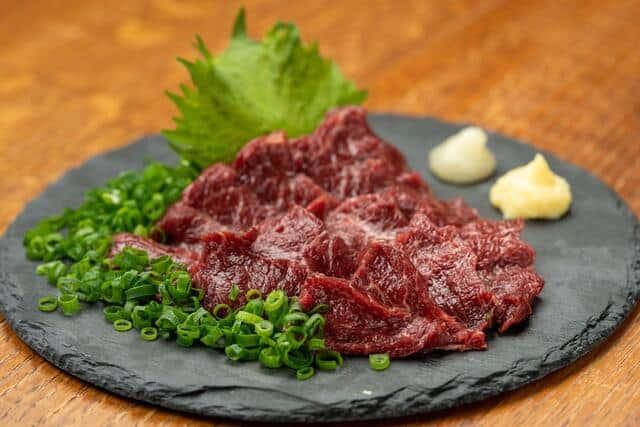
名物: 飯田はうなぎの名店が密集。丸井亭は炭火焼きのふっくら蒲焼き。木曜定休。ちょっと贅沢な昼食に。
名物: 元祖飯田ラーメン。中華そば小600円〜。名物揚げ餃子約500円。優しい味で子供も食べやすい。昭和の雰囲気。
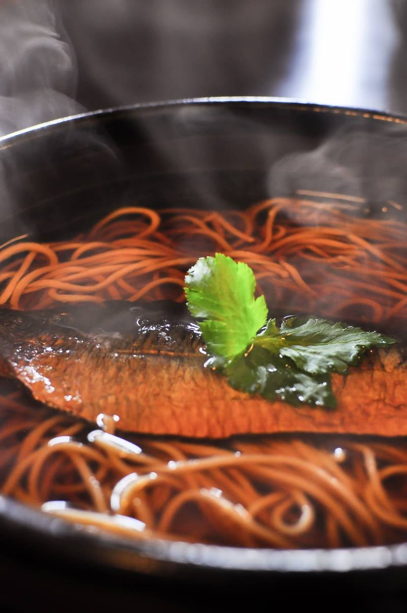
最強: 日帰り温泉＋プール＋食事が1ヶ所で完結。子供はプールで大はしゃぎ→疲れたら食事→温泉。信州そば・ソースカツ丼・郷土料理。
名物: 「ゆるキャン△」に登場で聖地巡礼スポット。メガ盛りソースかつ丼は圧巻。6年生が喜ぶ。火曜＋第1/3水曜定休。P15台。
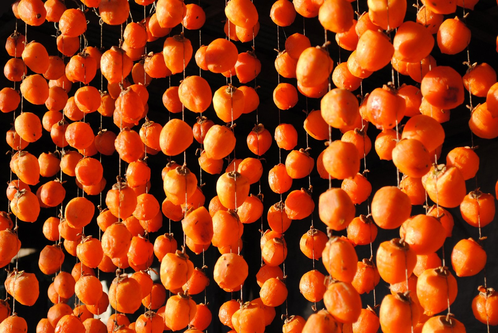
毎朝6:30から: おやき、五平餅、清内路の寄せとうふ（土日限定100パック即完売）、フルーツトマト、市田柿。年中無休365日。朝の散歩＆食べ歩きに最高。
名物: 甘〜いソースのカツ丼がメディア掲載多数。地元民に愛される老舗食堂。中華そばも人気。火木定休。
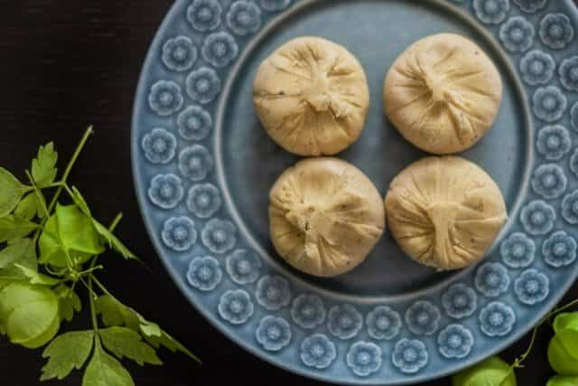
名物: 9店舗で五平餅食べ比べ。かなめや（46年老舗）が筆頭。栗きんとん・栗おこわも。坂の上から恵那山の絶景。帰路の途中に。
名物: 温泉プリン、フルーツスムージー。リノベ民家のおしゃれカフェ。お土産も買える。チェックイン前後のおやつ休憩に最適。
名物: 黒とんかつ定食（竹炭パウダーの真っ黒とんかつ！ わさび＋塩＋ソース3種で）。鹿肉まんも。見た目のインパクトで6年生が食いつく。ご飯大盛り無料。
清風苑ゆらからの車での所要時間付き
| # | 店名 | ジャンル | 距離 | 価格帯 | 営業 | 定休 | おすすめ |
|---|---|---|---|---|---|---|---|
| 1 | おにひら 昼神店 | そば | 車3分 | 720〜1,750円 | 10-16時 | なし | ★おにひらそば3人前 |
| 2 | おにひら 本店 | そば | 車5分 | 720〜1,750円 | 10-16時 | なし | 天ぷら盛合せ |
| 3 | 昼神うどん 玉のゆ | うどん | 車3分 | 900円〜 | 11-13:45 | 火曜 | 手作り牛乳プリン |
| 4 | 星空食堂 | 洋食 | 車3分 | 1,000〜1,500円 | 土日11-21時 | 水曜 | ★鹿肉ボロネーゼ |
| 5 | 大阪屋 | 定食 | 車10分 | 800〜1,200円 | 11-14/17-21 | 火木 | ★甘いカツ丼 |
| 6 | 門前屋 | そば | 車5分 | 800〜1,200円 | 10-15時 | 水曜 | 自家製豆腐付き |
| 7 | はらだ | 定食 | 車10分 | 800〜1,200円 | 11:30-14/17-21 | 月曜 | サバ塩焼き定食800円 |
| 8 | 舟よし | 和食 | 車5分 | 1,000〜1,500円 | 11:30-14/17:30-20 | 水曜 | 座敷あり。子連れ◎ |
| 9 | 山ちゃん | 焼肉 | 車10分 | 800〜1,500円 | 11-14/17:30-24 | 月曜 | 焼肉・韓国料理 |
| 10 | きたせんと | 食事処 | 車10分 | 800〜1,200円 | 11:30-14時 | 火木 | 和風定食 |
| 11 | 南国飯店 | 中華 | 車10分 | 700〜1,200円 | 10:30-14/17-20:30 | 水曜 | 地元の中華 |
| 12 | ざこや | 定食 | 車10分 | 900円〜 | 11-14/17-21 | 日曜 | ざこやセット900円 |
| 13 | ACHI BASE | カフェ | 車3分 | 500〜1,200円 | 11-23:30 | 不定休 | BBQ・カフェ |
| 14 | 昼神キヲスク | カフェ | 車3分 | 300〜800円 | 9:30-17時 | 不定休 | ★温泉プリン |
| 15 | サンマルシェ | 五平餅 | 車3分 | 200〜400円 | 9:30-15:30 | 火曜 | 五平餅・おやき |
| 16 | えんまん | おやき | 車3分 | 200〜300円 | 7:00〜売切 | 不定休 | 囲炉裏焼きおやき |
| 17 | tamurofarm KAFE | カフェ | 車10分 | 400〜800円 | 9:30-13:30 | 日〜水 | シナモンロール |
| 18 | ワッフル駒場 | パン | 車10分 | 300円〜 | 10-18:30 | 火水 | 焼菓子 |
| 19 | ANTON Bakery | パン | 車15分 | 300円〜 | 9-17時 | 水木 | ドイツパン |
| 20 | レストランRindou | 郷土料理 | 車5分 | 800〜1,500円 | 施設内 | — | ★温泉＋プール＋食事 |
| 21 | 朝市 | 食べ歩き | 徒歩5分 | 200円〜 | 6:30-8:00 | なし | ★毎朝365日開催 |
| # | 店名 | ジャンル | 価格帯 | 定休 | おすすめ |
|---|---|---|---|---|---|
| 22 | わらび家 | そば | 1,480円〜 | 木曜 | 十割そば・天ぷら |
| 23 | 農耕百花 | そば | 1,000〜1,999円 | 水曜 | 天ぷらそばセット |
| 24 | 上海楼 | ラーメン | 600〜850円 | — | ★元祖飯田ラーメン |
| 25 | 新京亭 | ラーメン | 600〜1,000円 | 水曜 | ラーメン・チャーハン |
| 26 | やきにく徳山 | 焼肉 | 1,000〜2,500円 | 不定休 | ★飯田焼肉の代表格 |
| 27 | だいこく家 | 焼肉 | 平均3,000円 | なし | ★全席半個室。子連れ最強 |
| 28 | 丸中商會 | ホルモン | 1,000円〜 | 火曜 | 自家製タレのホルモン |
| 29 | ３びきのこぶた | とんかつ | 1,000円〜 | なし | ★キャベツ食べ放題 |
| 30 | 満津田食堂 | 食堂 | 1,000円 | 月曜 | カツ丼・牛丼 |
| 31 | ソットオーリオ | イタリアン | 1,400円〜 | なし | ★サラダバー＋生パスタ |
| 32 | TESSHIN | 欧風料理 | 1,000〜1,999円 | 不定休 | 野菜セットランチ |
| 33 | 丸井亭 | うなぎ | 2,500〜4,000円 | 木曜 | ★炭火蒲焼き |
| 34 | うなぎや | うなぎ | 2,000〜3,500円 | 木曜 | 昭和レトロ |
| 35 | うな源 | うなぎ | 2,000〜3,500円 | — | ランチ＆ディナー |
| 36 | うなはる | うなぎ | 3,000円〜 | 木曜 | 完全予約制の老舗 |
| 37 | cafe'time | カフェ | 800〜1,200円 | 木曜 | ★キッズルーム完備 |
| 38 | ひらのや | カフェ | 1,375円〜 | 水曜 | 古民家カレーランチ |
| 39 | テンリュウ堂 | カフェ | 800円〜 | — | 古書＋コーヒー |
| 40 | 今宮半平 | 五平餅 | 130円〜 | 水曜 | ★明治5年創業の名店 |
| 41 | 五平餅竹や | 五平餅 | 150円〜 | — | くるみ味噌一筋 |
| 42 | 高田屋本店 | 五平餅 | 650円〜 | — | 五平餅＋そばセット |
| 43-50 | 他8店 | 各種 | — | — | 飯田市内の各種飲食店 |
| # | 店名 | ジャンル | 価格帯 | 定休 | おすすめ |
|---|---|---|---|---|---|
| 51 | 明治亭 本店 | ソースかつ丼 | 1,518円〜 | — | ★駒ヶ根の代名詞 |
| 52 | ガロ | ソースかつ丼 | 1,000〜1,800円 | 火+第1/3水 | ★ゆるキャン△聖地 |
| 53 | きらく | ソースかつ丼 | 900〜1,500円 | 木曜 | 地元民人気No.1 |
| 54 | 南信州ビール直営 | ビアレストラン | 1,000〜2,000円 | — | クラフトビール＋料理 |
| 55-63 | 他9店 | そば・かつ丼等 | — | — | 駒ヶ根のソースかつ丼11店 |
| # | 店名 | エリア | ジャンル | おすすめ |
|---|---|---|---|---|
| 64 | 萬里 | 伊那 | ローメン | ★昭和30年創業・元祖 |
| 65 | うしお | 伊那 | ローメン | 焼きそば風。子供向き |
| 66 | 青い塔 | 伊那 | ソースかつ丼 | 伊那のソースかつ丼発祥 |
| 67-71 | 他5店 | 伊那 | 各種 | — |
| 72 | くらすわ | 諏訪 | レストラン | ★野菜ビュッフェ＋信州豚 |
| 73-79 | 他7店 | 諏訪 | うなぎ・カフェ等 | — |
| SA/PA | 名物 | 子連れ |
|---|---|---|
| 談合坂SA | 豚まん・あんぱん・すた丼 | ★キッズスペースあり |
| 双葉SA | ワインビーフステーキ重・カレーパン | ★富士山展望台（2025年リニューアル） |
| 諏訪湖SA | さくら丼・信州サーモン丼 | ★諏訪湖一望テラス |
| 小黒川PA | 黒とんかつ（竹炭）・鹿肉まん | ご飯大盛り無料 |
| 駒ヶ岳SA | ソースかつ丼（24h提供！） | 山岳風景 |
| # | 店名 | エリア | ジャンル | おすすめ |
|---|---|---|---|---|
| 85 | 音吉 | 妻籠 | 山家料理 | ★自然薯とろろ定食¥1,650 |
| 86 | 好日珈琲 | 妻籠 | カフェ | そば粉ガレット |
| 87 | 澤田屋 | 妻籠 | 和菓子 | ★栗きんとん280円 |
| 88 | わちのや | 妻籠 | おやき | 野沢菜おやき |
| 89 | やまぎり食堂 | 妻籠 | 五平餅 | 秘伝タレの五平餅 |
| 90 | かなめや | 馬籠 | 五平餅 | ★46年老舗。自家製タレ |
| 91 | 恵盛庵 | 馬籠 | そば | ざるそば2枚付き |
| 92 | 大黒屋茶房 | 馬籠 | 甘味 | 栗ぜんざい |
| 93-95 | 他3店 | 馬籠 | 各種 | — |